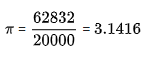

The place-value system, first seen in the 3rd-century Bakhshali Manuscript, was clearly in place in his work. While he did not use a symbol for zero, the French mathematician Georges Ifrah argues that knowledge of zero was implicit in Aryabhata's place-value system as a placeholder for the powers of ten with null coefficients.
Aryabhata worked on the approximation for pi (π), and may have come to the conclusion that π is irrational. In the second part of the Aryabhatiyam (gaṇitapāda 10), he writes:
caturadhikaṃ śatamaṣṭaguṇaṃ dvāṣaṣṭistathā sahasrāṇām ayutadvayaviṣkambhasyāsanno vṛttapariṇāhaḥ.
"Add four to 100, multiply by eight, and then add 62,000. By this rule the circumference of a circle with a diameter of 20,000 can be approached."
This implies that for a circle whose diameter is 20000, the circumference will be 62832
i.e,

It is speculated that Aryabhata used the word āsanna (approaching), to mean that not only is this an approximation but that the value is incommensurable (or irrational). If this is correct, it is quite a sophisticated insight, because the irrationality of pi (π) was proved in Europe only in 1761 by Lambert.
In Ganitapada 6, Aryabhata gives the area of a triangle as tribhujasya phalaśarīraṃ samadalakoṭī bhujārdhasaṃvargaḥ that translates to: "for a triangle, the result of a perpendicular with the half-side is the area."
Aryabhata discussed the concept of sine in his work by the name of ardha-jya, which literally means "half-chord". For simplicity, people started calling it jya. When Arabic writers translated his works from Sanskrit into Arabic, they referred to it as jiba. However, in Arabic writings, vowels are omitted, and it was abbreviated as jb. Later writers substituted it with jaib, meaning "pocket" or "fold (in a garment)". (In Arabic, jiba is a meaningless word.) Later in the 12th century, when Gherardo of Cremona translated these writings from Arabic into Latin, he replaced the Arabic jaib with its Latin counterpart, sinus, which means "cove" or "bay"; thence comes the English word sine.
A problem of great interest to Indian mathematicians since ancient times has been to find integer solutions to Diophantine equations that have the form ax + by = c. (This problem was also studied in ancient Chinese mathematics, and its solution is usually referred to as the Chinese remainder theorem.) This is an example from Bhāskara's commentary on Aryabhatiya:
Find the number which gives 5 as the remainder when divided by 8, 4 as the remainder when divided by 9, and 1 as the remainder when divided by 7 that is, find N = 8x+5 = 9y+4 = 7z+1. It turns out that the smallest value for N is 85.
In Aryabhatiya, Aryabhata provided elegant results for the summation of series of squares and cubes.

and